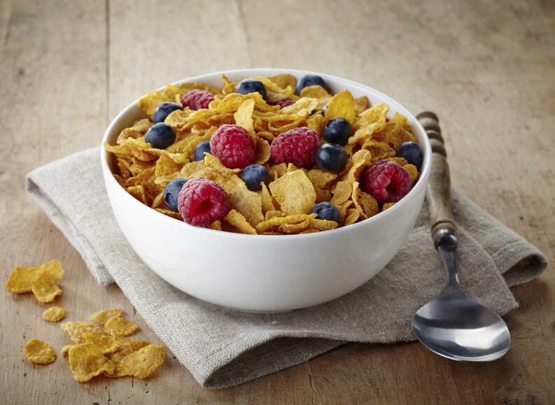

¿QUE VENDE NUESTRA TIENDA?
"EN NUESTRA TIENDA NUESTROS PRODUCTOS SON ORGANICOS Y ESTOS COMO BENEFICIAN PARA UNA VIDA MÁS SALUDABLE, APRENDE A COMER MÁS SANO Y MEJOR."

¿QUE VENDE NUESTRA TIENDA?
"EN NUESTRA TIENDA NUESTROS PRODUCTOS SON ORGANICOS Y ESTOS COMO BENEFICIAN PARA UNA VIDA MÁS SALUDABLE, APRENDE A COMER MÁS SANO Y MEJOR."
¿QUE BENEFICIOS HAY AL COMER CEREALES?
LOS CEREALES SON, POR EXCELENCIA, FUENTE PRINCIPAL DE ENERGÍA QUE EL ORGANISMO NECESITA PARA REALIZAR ACTIVIDADES DIARIAS, Y TAMBIÉN SON FUENTE IMPORTANTE DE FIBRA CUANDO SE CONSUMEN ENTEROS3. ENTRE LOS NUTRIMENTOS QUE CONTIENEN LOS CEREALES ENCONTRAMOS VITAMINAS, MINERALES, FIBRA E HIDRATOS DE CARBONO.
¿QUE BENEFICIOS HAY AL TOMAR YOGURT?
DE FORMA GENERAL EL YOGUR CONTIENE PROTEÍNAS MUY ÚTILES PARA EL SER HUMANO Y CON UNA MAYOR DIGESTIBILIDAD QUE LA LECHE. ADEMÁS, ES UNA BUENA FUENTE DE VITAMINAS DEL GRUPO B Y A Y UNA EXCELENTE FUENTE DE MINERALES COMO EL CALCIO, FÓSFORO, MAGNESIO Y ZINC.